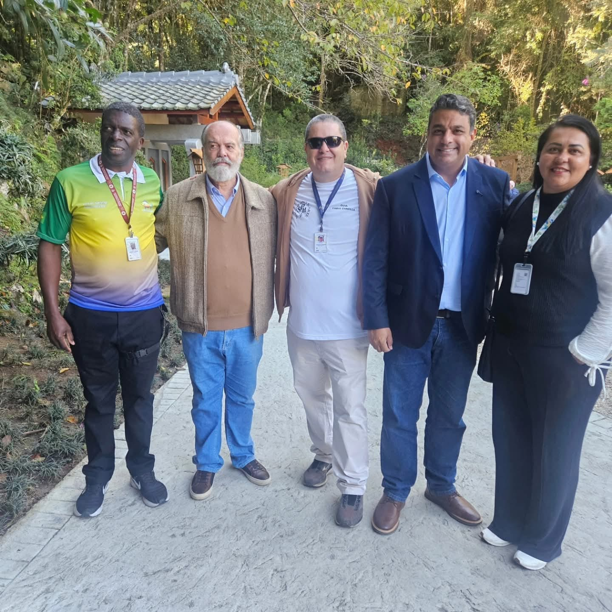
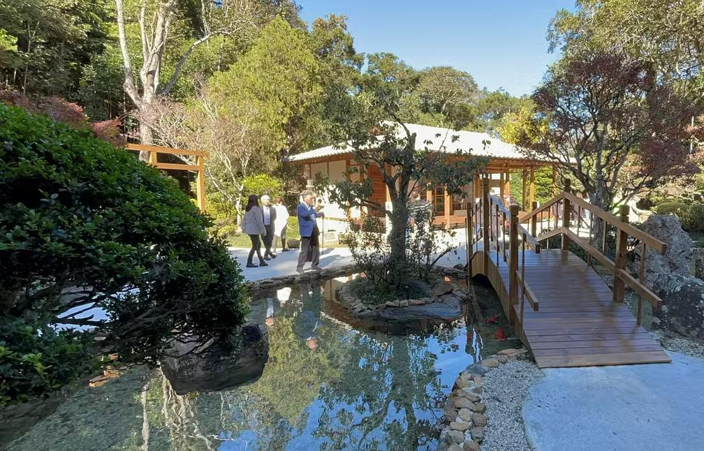

Galeria de Imagens
Alguns registros dos pontos turísticos de Poços de Caldas que fazem parte dos roteiros da Agência Paulo Rogério Tur.
Teleférico & Vista da Cidade

Estação do teleférico – cartão-postal com vista para a cidade.

Vista panorâmica de Poços de Caldas a partir dos mirantes.

Vista aérea da região do Cristo Redentor e Parque do Cristo.

Família em passeio guiado com Paulo Rogério no relógio floral.
Cristo Redentor & Parque do Cristo

Cristo Redentor – um dos pontos mais visitados da cidade.

Mirante do Parque do Cristo com vista para o vale.

Igreja Nossa Senhora de Fátima – parada de fé e contemplação.

Guia Paulo Rogério em eventos oficiais de turismo na cidade.
Fonte dos Amores & Águas termais

Fonte dos Amores – um dos cenários mais românticos da cidade.

Estrutura de águas termais – ideal para relaxamento.

Fonte dos Macacos – águas sulfurosas famosas na região.
Relógio floral – parada obrigatória para fotos em grupo.
Praça dos Macacos & Centro

Ponte na Praça dos Macacos – região central de Poços de Caldas.

Pedra Balão – formação rochosa tradicional nos roteiros.

Outra perspectiva da Pedra Balão com vista para o vale.

Lago no Country Club – cenário tranquilo para passeios.
Recanto Japonês

Entrada do Recanto Japonês – natureza e tranquilidade.

Casa com arquitetura inspirada na cultura japonesa.

Jardim japonês com lagos, pontes e vegetação típica.

Ponte sobre o lago das carpas no Recanto Japonês.
Cascatas & Águas termais

Grupo em passeio na Cascata Véu das Noivas.

Cascata das Antas – parada especial para fotos e contemplação.
Estrutura de águas termais – opção de roteiro para relaxar.
Piscina aquecida – complemento perfeito para excursões.